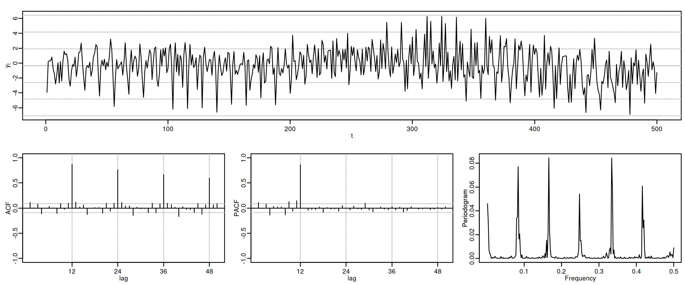
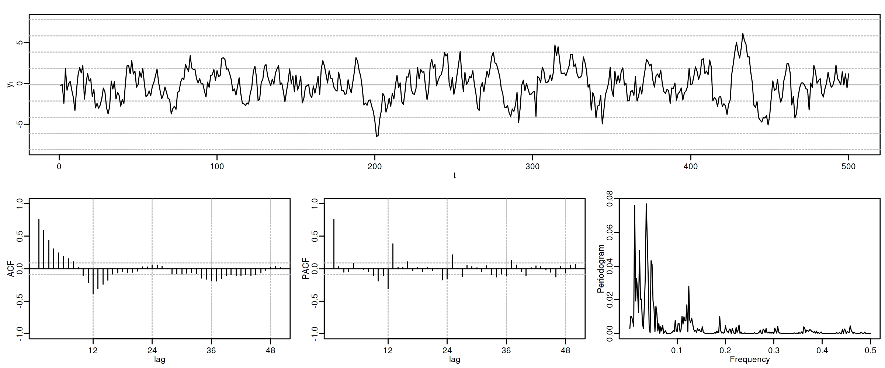
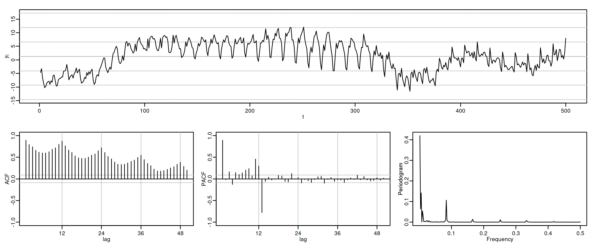
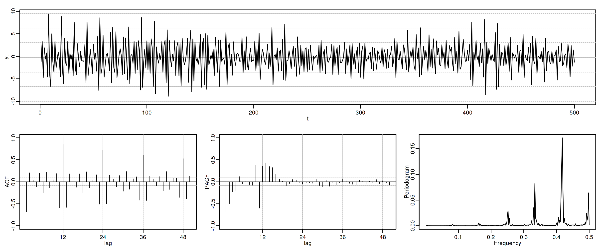

Econometría Aplicada. Lección 8
Table of Contents
En esta lección repasamos los instrumentos de identificación y diagnosis del análisis univariante. Extendemos la notación para incorporar modelos con raíces unitarias. Presentamos modelos estacionales y finalmente resumimos las ideas principales del análisis univariante.
Carga de algunas librerías de R
# cargamos algunas librerías de R library(tfarima) # librería de José Luis Gallego para Time Series library(readr) # para leer ficheros CSV library(ggplot2) # para el scatterplot (alternaticamente library(tidyverse)) library(ggfortify) # para pintar series temporales library(jtools) # para representación resultados estimación library(zoo) # para generar objetos ts (time series) # y fijamos el tamaño de las figuras que se generan en el notebook options(repr.plot.width = 12, repr.plot.height = 4, repr.plot.res = 200)
1. Identificación y diagnosis
- Combinando las herramientas gráficas y estadísticas que hemos visto, se puede inferir el modelo subyacente a los datos.
- Este proceso de especificación empírica del modelo es conocido como "identificación"
El proceso de identificación puede estructurarse como una secuencia de preguntas:
- ¿Es estacionaria la serie?
- ¿Tiene una media significativa?
- ¿Es persistente la ACF? ¿sigue alguna pauta reconocible?
- ¿Es persistente la PACF? ¿sigue alguna pauta reconocible?
- La identificación se basa en estadísticos, como la media muestral o las autocorrelaciones, cuya representatividad depende de la estacionariedad de las series
- Tras inducir la estacionariedad, especificamos un modelo tentativo decidiendo cuál de las funciones ACF o PACF es finita y cuál es persistente
| ACF finita | ACF persistente | |
|---|---|---|
| PACF finita | Ruido blanco: retardos conjuntamente NO significativos | AR: orden indicado por la PACF |
| PACF persistente | MA: orden indicado por la ACF | ARMA |
La parametrización de mayor orden en modelos ARMA con series económicas suele ser ARMA(\(2,1\))
1.1. Instrumentos de identificación
| Instrumento | Objetivo y observaciones | |
|---|---|---|
| Transf. logarítmica | Gráficos rango-media y serie temporal | Conseguir independizar la variabilidad de los datos de su nivel. Las series económicas suelen necesitar esta transformación |
| \(d\), orden de diferenciación | Gráfico de la serie temporal. ACF (caída lenta y lineal). Contrastes de raíz unitaria (DF o ADF y KPSS) | Conseguir que los datos fluctúen en torno a una media estable. En series económicas, \(d\) suele ser 1 ó 2 |
| Constante | Media de la serie diferenciada. Desviación típica de la media | Si la media de la serie transformada es significativa, el modelo debe incluir un término constante |
| \(p\), orden AR | PACF de orden \(p\). ACF infinita | PACF tiene \(p\) valores no nulos. En series económicas \(p\) suele ser \(\leq2\) |
| \(q\), orden MA | ACF de orden \(q\). PACF infinita | ACF tiene \(q\) valores no nulos. En series económicas q suele ser \(\leq1\) |
1.2. Instrumentos de diagnosis
| Instrumento | Posible diagnóstico | |
|---|---|---|
| \(d\), orden de diferenciación | Proximidad a 1 de alguna raíz de los polinomios AR o MA | Si la raíz es AR quizá conviene diferenciar. O quitar una diferencia si es MA (salvo si hay tendencia determinista) |
| \(d\), orden de diferenciación | Gráfico de los residuos | Si muestra rachas largas de residuos positivos o negativos, puede ser necesaria una diferencia adicional. |
| Constante | Media de los residuos | Si es significativa: añadir una constante |
| Constante | Constante estimada | Si NO es significativa: el modelo mejorará quitando el término constante |
| \(p\) y \(q\), | Contrastes de significación de los parámetros estimados | Pueden sugerir eliminar parámetros irrelevantes |
| \(p\) y \(q\), | ACF/PACF residuos. Test Q de Ljung-Box | Indican posibles pautas de autocorrelación no modelizadas |
| \(p\) y \(q\), | Correlaciones elevadas entre los parámetros estimados | Puede ser síntoma de sobreparametrización |
Aún, una vez superadas las pruebas de diagnostico, se puede aplicar un análisis exploratorio consistente en añadir parámetros AR y/o MA, para comprobar si resultan significativos y mejoran el modelo
2. Raíces unitarias
2.1. Notación: operadores retardo y diferencia y modelos ARIMA
El operador diferencia \(\nabla\) se define a partir del operador retardo como \(\nabla=(1 - \mathsf{B})\): \[\nabla Y_t = (1 - \mathsf{B})Y_t = Y_t - Y_{t-1}\] El operador diferencia estacional es \({\nabla}_{_S} = (1 - \mathsf{B}^S)\): \[\nabla_{_S}Y_t = (1 - \mathsf{B}^S)Y_t = Y_t - Y_{t-S}\]
2.1.1. Notación: ARIMA
Con ``ARIMA(\(p,d,q\))'', donde \(d\) indica el número \(d\) de diferencias que la serie necesita para ser estacionaria en media, extendemos la notación a procesos con raíces autorregresivas unitarias \[\boldsymbol{\phi}_p*\nabla^d*\boldsymbol{Y} = \boldsymbol{\theta}_q* \boldsymbol{U}\] es decir \[\boldsymbol{\phi}_p(\mathsf{B})\nabla^d Y_t = \boldsymbol{\theta}_q(\mathsf{B}) U_t; \quad t\in\mathbb{Z}\]
2.2. Raíces unitarias en los polinomios AR y MA
Cuando un polinomio tiene alguna raíz igual a uno se dice que tiene “raíces unitarias”.
Si el polinomio AR estimado tiene alguna raíz "próxima a uno", es síntoma de subdiferenciación.
Si el polinomio MA estimado tiene alguna raíz "próxima a uno", es síntoma de
- sobrediferenciación… salvo cuando…
- antes de diferenciar hubiera una tendencia determinista (que podemos comprobar, por ejemplo, con un test ADF).
Ejemplos que ilustran los tres casos:
| Modelo expresado con raíces unitarias en \(\boldsymbol{\phi}\) o \(\boldsymbol{\theta}\) | Modelo equivalente sin raíces unitarias en \(\boldsymbol{\phi}\) o \(\boldsymbol{\theta}\) |
|---|---|
| \((1-1.5\mathsf{B}+.5\mathsf{B}^2) Y_t = U_t\) | \({\color{blue}{(1-0.5\mathsf{B})\nabla Y_t=U_t}}\) |
| \((1-.5\mathsf{B}+0.7\mathsf{B}^2)\nabla^2Y_t=(1-\mathsf{B})U_t\) | \({\color{blue}{(1-.5\mathsf{B}+0.7\mathsf{B}^2)\nabla Y_t = U_t}}\) |
| \({\color{blue}{\nabla Y_t = \beta+ (1-\mathsf{B}) U_t}}\) | \(Y_t = \beta t + U_t\quad\) (¡no estacionario!) |
2.3. Paseos aleatorios
Un paseo aleatorio representa una variable cuyos cambios son ruido blanco: \[Y_t = \mu + Y_{t-1} + U_t\]
Cuando \(\mu=0\) se denomina sencillamente paseo aleatorio: \(\;\nabla Y_t = U_t\)
options(repr.plot.width = 12, repr.plot.height = 4, repr.plot.res = 200) rw <- um(i = "(1 - B)") ide(sim(rw, n = 500), lag.max = 20, graphs = c("plot", "acf", "pacf", "pgram"), main = "Paseo aleatorio")
Cuando \(\mu\ne0\) se denomina paseo aleatorio con deriva: \(\;\nabla Y_t = \mu + U_t\)
options(repr.plot.width = 12, repr.plot.height = 4, repr.plot.res = 200) rwcd <- um(i = "(1 - B)", mu=.25) ide(sim(rwcd, n = 500), lag.max = 20, graphs = c("plot", "acf", "pacf", "pgram"), main = "Paseo aleatorio con deriva (mu=0.25)")
El proceso tiene mayor inercia cuanto mayor es \(|\mu|\). El signo de \(\mu\) determina el signo de la pendiente global.
3. Modelos ARIMA estacionales (SARIMA)
El período estacional \(S\) es el número mínimo de observaciones necesarias para recorrer un ciclo estacional completo. Por ejemplo, \(S=12\) para datos mensuales, \(S=4\) para datos trimestrales, etc.
Describiremos comportamientos estacionales con modelos ARIMA\((p,d,q)\times(P,D,Q)_S\)
\[\boldsymbol{\phi}_p(\mathsf{B})\boldsymbol{\Phi}_P(\mathsf{B}^S)\nabla^d\nabla_{_S}^D Y_t = \boldsymbol{\theta}_q(\mathsf{B})\boldsymbol{\Theta}_q(\mathsf{B}^S) U_t; \quad t\in\mathbb{Z}\] donde
\begin{align*} \boldsymbol{\Phi}_P(\mathsf{B}^S) = & 1-\Phi_1\mathsf{B}^{1\cdot S}-\Phi_2\mathsf{B}^{2\cdot S}-\cdots-\Phi_P\mathsf{B}^{P\cdot S}\\ \boldsymbol{\Theta}_Q(\mathsf{B}^S) = & 1-\Theta_1\mathsf{B}^{1\cdot S}-\Theta_2\mathsf{B}^{2\cdot S}-\cdots-\Theta_Q\mathsf{B}^{Q\cdot S}\\ {\nabla}_{_S}^D = & (1 - \mathsf{B}^S)^D \end{align*}Es decir, el modelo consta de polinomios autorregresivos y de media móvil tanto regulares (en minúsculas) como estacionales (en mayúsculas).
Veamos un ejemplo de un modelo MA(\(1\)) estacional y otro de un modelo AR(\(1\)) estacional…
3.1. MA(1) estacional con raíz positiva
options(repr.plot.width = 12, repr.plot.height = 2, repr.plot.res = 200) SMA1 <- um(ma = "(1 - 0.9B12)") display(list(SMA1), lag.max = 50, byrow = TRUE)
MA(\(1\)) estacional: \(\quad\boldsymbol{\Theta}=1-0.9z^{12}\quad\Rightarrow\quad X_t= (1-0.9 \mathsf{B}^{12})U_t\)
roots(SMA1)
Real Imaginary Modulus Frequency Period Mult. 1.008819e+00 1.082287e-14 1.008819 0.00000000 Inf 1 8.736626e-01 5.044094e-01 1.008819 0.08333333 12.0 1 8.736626e-01 -5.044094e-01 1.008819 0.08333333 12.0 1 5.044094e-01 -8.736626e-01 1.008819 0.16666667 6.0 1 5.044094e-01 8.736626e-01 1.008819 0.16666667 6.0 1 1.288336e-14 -1.008819e+00 1.008819 0.25000000 4.0 1 -2.057493e-17 1.008819e+00 1.008819 0.25000000 4.0 1 -5.044094e-01 -8.736626e-01 1.008819 0.33333333 3.0 1 -5.044094e-01 8.736626e-01 1.008819 0.33333333 3.0 1 -8.736626e-01 -5.044094e-01 1.008819 0.41666667 2.4 1 -8.736626e-01 5.044094e-01 1.008819 0.41666667 2.4 1 -1.008819e+00 -1.257046e-14 1.008819 0.50000000 2.0 1
options(repr.plot.width = 12, repr.plot.height = 5, repr.plot.res = 200) ide(sim(SMA1, n = 500), lag.max = 50, graphs = c("plot", "acf", "pacf", "pgram"))
3.2. AR(1) estacional con raíz positiva
options(repr.plot.width = 12, repr.plot.height = 2, repr.plot.res = 200) SAR1 <- um(ar = "(1 - 0.9B12)") display(list(SAR1), lag.max = 50, byrow = TRUE)
AR(\(1\)) estacional: \(\quad\boldsymbol{\Phi}=1-0.9z^{12}\quad\Rightarrow\quad (1-0.9 \mathsf{B}^{12})X_t= U_t\)
roots(SAR1)
Evidentemente las raíces son iguales a las del caso anterior (aunque ahora corresponden al polinomio autorregresivo).
options(repr.plot.width = 12, repr.plot.height = 5, repr.plot.res = 200) ide(sim(SAR1, n = 500), lag.max = 50, graphs = c("plot", "acf", "pacf", "pgram"))

Con estos dos ejemplos hemos podido apreciar que:
- las pautas de autocorrelación son análogas a las de los MA(1) y AR(2), pero ahora los retardos significativos corresponden a los retardos estacionales, es decir, a múltiplos del período estacional \(S\).
- las correlaciones correspondientes a los “retardos regulares” (es decir, todos menos menos los estacionales) son no significativas en general.
- En estos ejemplos, en los que \(S=12\), los retardos estacionales son: 12, 24, 36, 48, 60,…
Veamos ahora un par de ejemplos de modelos estacionales multiplicativos (i.e., con parte regular y parte estacional).
3.3. ARIMA\((0,0,1)\times(0,0,1)_{12}\)
options(repr.plot.width = 12, repr.plot.height = 2, repr.plot.res = 200) MA1SMA1 <- um(ma = "(1 - 0.9B)(1 - 0.9B12)") display(list(MA1SMA1), lag.max = 50, byrow = TRUE)
ARIMA\((0,0,1)\times(0,0,1)_{12}\): \(\quad X_t= (1-0.9 \mathsf{B})(1-0.9 \mathsf{B}^{12})U_t\)
options(repr.plot.width = 12, repr.plot.height = 5, repr.plot.res = 200) ide(sim(MA1SMA1, n = 500), lag.max = 50, graphs = c("plot", "acf", "pacf", "pgram"))

3.4. ARIMA\((1,0,0)\times(0,0,1)_{12}\)
options(repr.plot.width = 12, repr.plot.height = 2, repr.plot.res = 200) AR1SMA1 <- um(ar = "(1 - 0.9B)", ma = "(1 - 0.9B12)") display(list(AR1SMA1), lag.max = 50, byrow = TRUE)
ARIMA\((1,0,0)\times(0,0,1)_{12}\): \(\quad (1-0.9 \mathsf{B})X_t= (1-0.9 \mathsf{B}^{12})U_t\)
options(repr.plot.width = 12, repr.plot.height = 5, repr.plot.res = 200) ide(sim(AR1SMA1, n = 500), lag.max = 50, graphs = c("plot", "acf", "pacf", "pgram"))

3.5. ARIMA\((1,0,0)\times(1,0,0)_{12}\)
options(repr.plot.width = 12, repr.plot.height = 2, repr.plot.res = 200) AR1SAR1 <- um(ar = "(1 - 0.9B)(1 - 0.9B12)") display(list(AR1SAR1), lag.max = 50, byrow = TRUE, log.spec = TRUE)
ARIMA\((1,0,0)\times(1,0,0)_{12}\): \(\quad (1-0.9 \mathsf{B})(1-0.9 \mathsf{B}^{12})X_t= U_t\)
options(repr.plot.width = 12, repr.plot.height = 5, repr.plot.res = 200) ide(sim(AR1SAR1, n = 500), lag.max = 50, graphs = c("plot", "acf", "pacf", "pgram"))

3.6. ARIMA\((0,0,1)\times(1,0,0)_{12}\)
options(repr.plot.width = 12, repr.plot.height = 2, repr.plot.res = 200) MA1SAR1 <- um(ar = "(1 - 0.9B12)", ma = "(1 - 0.9)") display(list(MA1SAR1), lag.max = 50, byrow = TRUE, log.spec = TRUE)
ARIMA\((0,0,1)\times(1,0,0)_{12}\): \(\quad (1-0.9 \mathsf{B}^{12})X_t= (1-0.9 \mathsf{B})U_t\)
options(repr.plot.width = 12, repr.plot.height = 5, repr.plot.res = 200) ide(sim(MA1SAR1, n = 500), lag.max = 50, graphs = c("plot", "acf", "pacf", "pgram"))

En estos cuatro ejemplos hemos podido apreciar que
- en el entorno de los retardos estacionales surgen una serie de coeficientes significativos (“satélites”) que proceden de la interacción entre las estructuras regular y estacional
- Estos satélites son útiles para identificar en qué retardos estacionales hay autocorrelaciones no nulas, pero no requieren una parametrización especial.
4. Resumen del análisis univariante de series temporales
4.1. Ideas principales
- Se basa en modelos sin variables exógenas que resumen la interdependencia temporal con polinomios de órdenes reducidos.
- Está especialmente indicado para predecir el futuro de la serie temporal.
- Parte de dos supuestos sobre el proceso estocástico subyacente:
- es débilmente estacionario
- tiene representación en forma de proceso lineal \(Y_t=\sum_{j=0}^\infty a_j U_{t-j}\)
- (Además se suele asumir normalidad en \(U_t\))
- utiliza variados instrumentos: (a) gráficos (b) función de autocorrelación (c) función de autocorrelación parcial, (d) estadístico Q de Ljung-Box, etc…
- Si la serie original no "parece" débilmente estacionaria, se induce esta propiedad mediante las transformaciones adecuadas
| ACF finita | ACF persistente | |
|---|---|---|
| PACF finita | Ruido blanco: retardos conjuntamente NO significativos | AR: orden indicado por la PACF |
| PACF persistente | MA: orden indicado por la ACF | ARMA |
4.2. Metodología
Tres fases:
- Identificación
- Elija una especificación provisional para el proceso estocástico generador de los datos en base a las características medibles de los datos: “dejar que los datos hablen”
- Estimación
- suele requerir métodos iterativos
- Diagnosis
- de la calidad estadística del modelo ajustado. Algunos
controles estándar son:
- Significatividad de los parámetros estimados
- Estacionariedad y homocedasticidad de los residuos
- ¿Existe un patrón de autocorrelación residual que podría ser modelado? ¿O hemos logrado que los residuos sean "ruido blanco"?
Si la diagnosis no es satisfactoria, se vuelve a la primera fase.
Si la diagnosis es satisfactoria… ¡hemos logrado un modelo aceptable!